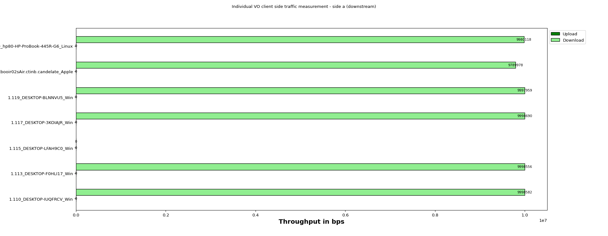
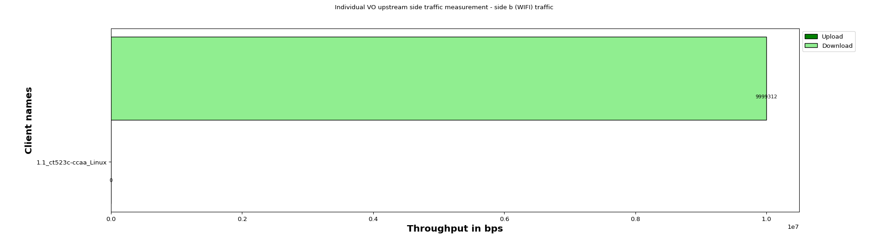

| s/no | test_name | Duration | status |
|---|
| Device Under Test |
|
||||||||||||||||
| Test Configuration |
|
||||||||||||||||||||||||
The below graph represents individual throughput for 7 clients running VO (WiFi) traffic. Y- axis shows “Client names“ and X-axis shows “Throughput in Mbps”.

| Client Alias | Host eid | Host Name | Device Type / Hw Ver | Endp Name | Port Name | Mode | Mac | SSID | Channel | Type of traffic | Traffic Protocol | Offered Upload Rate Per Client | Offered Download Rate Per Client | Upload Rate Per Client | Download Rate Per Client | Drop Percentage (%) |
|---|---|---|---|---|---|---|---|---|---|---|---|---|---|---|---|---|
| 1.110_DESKTOP-IUQFRCV_Win | 1.110 | DESKTOP-IUQFRCV | Win/x86 6.2 | MLT-mrx-VO-wlan0-1 | 1.110.wlan0 | AUTO 20 | 24:ee:9a:39:2e:61 | 0 | VO | Mcast | 0 | 10000000 | 0 | 9998582 | 0.0 | |
| 1.113_DESKTOP-F0HLI17_Win | 1.113 | DESKTOP-F0HLI17 | Win/x86 6.2 | MLT-mrx-VO-wlan0-2 | 1.113.wlan0 | 802.11abgn-AC 20 1x1 | 00:bb:60:0b:5a:fe | OpenWifi_psk2 | 36 | VO | Mcast | 0 | 10000000 | 0 | 9998556 | 0.0 |
| 1.115_DESKTOP-LFAH9C0_Win | 1.115 | DESKTOP-LFAH9C0 | Win/x86 6.2 | MLT-mrx-VO-wlan0-3 | 1.115.wlan0 | 802.11abgn-AC 20 1x1 | 34:f3:9a:eb:46:b4 | OpenWifi_psk2 | 36 | VO | Mcast | 0 | 10000000 | 0 | 0 | 0.0 |
| 1.117_DESKTOP-3KOIAJR_Win | 1.117 | DESKTOP-3KOIAJR | Win/x86 6.2 | MLT-mrx-VO-wlan0-4 | 1.117.wlan0 | 802.11abgn 20 1x1 | f4:8c:50:e2:01:67 | OpenWifi_psk2 | 1 | VO | Mcast | 0 | 10000000 | 0 | 9998690 | 0.0 |
| 1.119_DESKTOP-BLNNVU5_Win | 1.119 | DESKTOP-BLNNVU5 | Win/x86 6.2 | MLT-mrx-VO-wlan0-5 | 1.119.wlan0 | 802.11abgn-AC 20 1x1 | 34:41:5d:51:d1:96 | OpenWifi_psk2 | 36 | VO | Mcast | 0 | 10000000 | 0 | 9997959 | 0.0 |
| 1.154_mackbooir02sAir.ctinb.candelate_Apple | 1.154 | mackbooir02sAir.ctinb.candelate | Apple/x86-64 | MLT-mrx-VO-en0-6 | 1.154.en0 | 802.11abg 80 2x2 | 48:bf:6b:d4:60:5a | OpenWifi_psk2 | 36 | VO | Mcast | 0 | 10000000 | 0 | 9789978 | 0.0 |
| 1.209_hp80-HP-ProBook-445R-G6_Linux | 1.209 | hp80-HP-ProBook-445R-G6 | Linux/x86-64 | MLT-mrx-VO-wlan0-7 | 1.209.wlan0 | 802.11an-AC 80 2x2 | 28:cd:c4:de:d3:bb | OpenWifi_psk2 | 36 | VO | Mcast | 0 | 10000000 | 0 | 9980118 | 0.0 |
The below graph represents individual throughput for 1 clients running VO (WiFi) traffic. Y- axis shows “Client names“ and X-axis shows “Throughput in Mbps”.

| Client Alias | Host eid | Host Name | Device Type / HW Ver | Endp Name | Port Name | Mode | Mac | SSID | Channel | Type of traffic | Traffic Protocol | Offered Upload Rate Per Client | Offered Download Rate Per Client | Upload Rate Per Client | Download Rate Per Client | Drop Percentage (%) |
|---|---|---|---|---|---|---|---|---|---|---|---|---|---|---|---|---|
| 1.1_ct523c-ccaa_Linux | 1.1 | ct523c-ccaa | Linux/x86-64 | MLT-mtx-VO-eth2-0 | 1.1.eth2 | 9c:69:b4:63:72:ce | [channel: 2] | VO | Mcast | 0 | 10000000 | 0 | 9999312 | 0.0 |
| Time epoch | Time | Total-Station-Count | UL-Min-Requested | UL-Max-Requested | DL-Min-Requested | DL-Max-Requested | UL-Min-PDU | UL-Max-PDU | DL-Min-PDU | DL-Max-PDU | Attenuation | Name | Rx-Bps | Tx-Bps | Rx-Link-Rate | Tx-Link-Rate | RSSI | AP | Mode | MAC | Channel | Rx-Latency | Rx-Jitter | Ul-Rx-Goodput-bps | Ul-Rx-Rate-ll | Ul-Rx-Pkts-ll | Ul-Rx-Drop_Percent | Dl-Rx-Goodput-bps | Dl-Rx-Rate-ll | Dl-Rx-Pkts-ll | DL-Rx-Drop-Percent |
|---|---|---|---|---|---|---|---|---|---|---|---|---|---|---|---|---|---|---|---|---|---|---|---|---|---|---|---|---|---|---|---|
| 1758781676 | 09_25_2025_11_57_56 | 14 | 0 | 0 | 10000000 | 10000000 | MTU | MTU | MTU | MTU | -1 | eth2 | 144657 | 9170142 | 2.5 Gbps | 2.5 Gbps | NaN | NaN | NaN | 9c:69:b4:63:72:ce | [channel: 2] | 0 | 0 | 0 | 0 | 0 | 0 | 0 | 0 | 0 | 0 |
| Time epoch | Time | Total-Station-Count | UL-Min-Requested | UL-Max-Requested | DL-Min-Requested | DL-Max-Requested | UL-Min-PDU | UL-Max-PDU | DL-Min-PDU | DL-Max-PDU | Attenuation | Name | Rx-Bps | Tx-Bps | Rx-Link-Rate | Tx-Link-Rate | RSSI | AP | Mode | MAC | Channel | Rx-Latency | Rx-Jitter | Ul-Rx-Goodput-bps | Ul-Rx-Rate-ll | Ul-Rx-Pkts-ll | Ul-Rx-Drop_Percent | Dl-Rx-Goodput-bps | Dl-Rx-Rate-ll | Dl-Rx-Pkts-ll | DL-Rx-Drop-Percent |
|---|---|---|---|---|---|---|---|---|---|---|---|---|---|---|---|---|---|---|---|---|---|---|---|---|---|---|---|---|---|---|---|
| 1758781676 | 09_25_2025_11_57_56 | 14 | 0 | 0 | 10000000 | 10000000 | MTU | MTU | MTU | MTU | -1 | 1.110.wlan0 | 279474412 | 275586161 | 0 bps | NaN | NaN | NaN | AUTO 20 | 24:ee:9a:39:2e:61 | 0 | -8 | 1 | 9998812 | 10285229 | 53297 | 0.0 | 0 | 0 | 0 | 0 |
| Time epoch | Time | Total-Station-Count | UL-Min-Requested | UL-Max-Requested | DL-Min-Requested | DL-Max-Requested | UL-Min-PDU | UL-Max-PDU | DL-Min-PDU | DL-Max-PDU | Attenuation | Name | Rx-Bps | Tx-Bps | Rx-Link-Rate | Tx-Link-Rate | RSSI | AP | Mode | MAC | Channel | Rx-Latency | Rx-Jitter | Ul-Rx-Goodput-bps | Ul-Rx-Rate-ll | Ul-Rx-Pkts-ll | Ul-Rx-Drop_Percent | Dl-Rx-Goodput-bps | Dl-Rx-Rate-ll | Dl-Rx-Pkts-ll | DL-Rx-Drop-Percent |
|---|---|---|---|---|---|---|---|---|---|---|---|---|---|---|---|---|---|---|---|---|---|---|---|---|---|---|---|---|---|---|---|
| 1758781676 | 09_25_2025_11_57_56 | 14 | 0 | 0 | 10000000 | 10000000 | MTU | MTU | MTU | MTU | -1 | 1.113.wlan0 | 314280977 | 308935501 | 650 Mbps | 650 Mbps | -33 dBm | 92:3C:B3:6C:43:41 | 802.11abgn-AC 20 1x1 | 00:bb:60:0b:5a:fe | 36 | -961 | 1 | 9998529 | 10285280 | 53287 | 0.0 | 0 | 0 | 0 | 0 |
| Time epoch | Time | Total-Station-Count | UL-Min-Requested | UL-Max-Requested | DL-Min-Requested | DL-Max-Requested | UL-Min-PDU | UL-Max-PDU | DL-Min-PDU | DL-Max-PDU | Attenuation | Name | Rx-Bps | Tx-Bps | Rx-Link-Rate | Tx-Link-Rate | RSSI | AP | Mode | MAC | Channel | Rx-Latency | Rx-Jitter | Ul-Rx-Goodput-bps | Ul-Rx-Rate-ll | Ul-Rx-Pkts-ll | Ul-Rx-Drop_Percent | Dl-Rx-Goodput-bps | Dl-Rx-Rate-ll | Dl-Rx-Pkts-ll | DL-Rx-Drop-Percent |
|---|---|---|---|---|---|---|---|---|---|---|---|---|---|---|---|---|---|---|---|---|---|---|---|---|---|---|---|---|---|---|---|
| 1758781676 | 09_25_2025_11_57_56 | 14 | 0 | 0 | 10000000 | 10000000 | MTU | MTU | MTU | MTU | -1 | 1.115.wlan0 | 435359490 | 427992418 | 433.3 Mbps | 433 Mbps | -43 dBm | 92:3C:B3:6C:43:41 | 802.11abgn-AC 20 1x1 | 34:f3:9a:eb:46:b4 | 36 | 0 | 0 | 0 | 0 | 0 | 0.0 | 0 | 0 | 0 | 0 |
| Time epoch | Time | Total-Station-Count | UL-Min-Requested | UL-Max-Requested | DL-Min-Requested | DL-Max-Requested | UL-Min-PDU | UL-Max-PDU | DL-Min-PDU | DL-Max-PDU | Attenuation | Name | Rx-Bps | Tx-Bps | Rx-Link-Rate | Tx-Link-Rate | RSSI | AP | Mode | MAC | Channel | Rx-Latency | Rx-Jitter | Ul-Rx-Goodput-bps | Ul-Rx-Rate-ll | Ul-Rx-Pkts-ll | Ul-Rx-Drop_Percent | Dl-Rx-Goodput-bps | Dl-Rx-Rate-ll | Dl-Rx-Pkts-ll | DL-Rx-Drop-Percent |
|---|---|---|---|---|---|---|---|---|---|---|---|---|---|---|---|---|---|---|---|---|---|---|---|---|---|---|---|---|---|---|---|
| 1758781676 | 09_25_2025_11_57_56 | 14 | 0 | 0 | 10000000 | 10000000 | MTU | MTU | MTU | MTU | -1 | 1.117.wlan0 | 479273043 | 471231249 | 300 Mbps | 300 Mbps | -21 dBm | 92:3C:B3:6C:43:40 | 802.11abgn 20 1x1 | f4:8c:50:e2:01:67 | 1 | -7258 | 0 | 9998536 | 10284164 | 53411 | 0.0 | 0 | 0 | 0 | 0 |
| Time epoch | Time | Total-Station-Count | UL-Min-Requested | UL-Max-Requested | DL-Min-Requested | DL-Max-Requested | UL-Min-PDU | UL-Max-PDU | DL-Min-PDU | DL-Max-PDU | Attenuation | Name | Rx-Bps | Tx-Bps | Rx-Link-Rate | Tx-Link-Rate | RSSI | AP | Mode | MAC | Channel | Rx-Latency | Rx-Jitter | Ul-Rx-Goodput-bps | Ul-Rx-Rate-ll | Ul-Rx-Pkts-ll | Ul-Rx-Drop_Percent | Dl-Rx-Goodput-bps | Dl-Rx-Rate-ll | Dl-Rx-Pkts-ll | DL-Rx-Drop-Percent |
|---|---|---|---|---|---|---|---|---|---|---|---|---|---|---|---|---|---|---|---|---|---|---|---|---|---|---|---|---|---|---|---|
| 1758781676 | 09_25_2025_11_57_56 | 14 | 0 | 0 | 10000000 | 10000000 | MTU | MTU | MTU | MTU | -1 | 1.119.wlan0 | 9310651 | 4594 | 780 Mbps | 780 Mbps | -36 dBm | 92:3C:B3:6C:43:41 | 802.11abgn-AC 20 1x1 | 34:41:5d:51:d1:96 | 36 | -3322 | 1 | 9997935 | 10284829 | 53311 | 0.0 | 0 | 0 | 0 | 0 |
| Time epoch | Time | Total-Station-Count | UL-Min-Requested | UL-Max-Requested | DL-Min-Requested | DL-Max-Requested | UL-Min-PDU | UL-Max-PDU | DL-Min-PDU | DL-Max-PDU | Attenuation | Name | Rx-Bps | Tx-Bps | Rx-Link-Rate | Tx-Link-Rate | RSSI | AP | Mode | MAC | Channel | Rx-Latency | Rx-Jitter | Ul-Rx-Goodput-bps | Ul-Rx-Rate-ll | Ul-Rx-Pkts-ll | Ul-Rx-Drop_Percent | Dl-Rx-Goodput-bps | Dl-Rx-Rate-ll | Dl-Rx-Pkts-ll | DL-Rx-Drop-Percent |
|---|---|---|---|---|---|---|---|---|---|---|---|---|---|---|---|---|---|---|---|---|---|---|---|---|---|---|---|---|---|---|---|
| 1758781676 | 09_25_2025_11_57_56 | 14 | 0 | 0 | 10000000 | 10000000 | MTU | MTU | MTU | MTU | -1 | 1.154.en0 | 3715549 | 1407 | 304.2 Mbps | 527 Mbps | -41 dBm | 92:3C:B3:6C:43:41 | 802.11abg 80 2x2 | 48:bf:6b:d4:60:5a | 36 | -78 | 1 | 9769772 | 10051377 | 40146 | 0.0 | 0 | 0 | 0 | 0 |
| Time epoch | Time | Total-Station-Count | UL-Min-Requested | UL-Max-Requested | DL-Min-Requested | DL-Max-Requested | UL-Min-PDU | UL-Max-PDU | DL-Min-PDU | DL-Max-PDU | Attenuation | Name | Rx-Bps | Tx-Bps | Rx-Link-Rate | Tx-Link-Rate | RSSI | AP | Mode | MAC | Channel | Rx-Latency | Rx-Jitter | Ul-Rx-Goodput-bps | Ul-Rx-Rate-ll | Ul-Rx-Pkts-ll | Ul-Rx-Drop_Percent | Dl-Rx-Goodput-bps | Dl-Rx-Rate-ll | Dl-Rx-Pkts-ll | DL-Rx-Drop-Percent |
|---|---|---|---|---|---|---|---|---|---|---|---|---|---|---|---|---|---|---|---|---|---|---|---|---|---|---|---|---|---|---|---|
| 1758781676 | 09_25_2025_11_57_56 | 14 | 0 | 0 | 10000000 | 10000000 | MTU | MTU | MTU | MTU | -1 | 1.209.wlan0 | 6830103 | 18 | 86.7 Mbps | 650 Mbps | -13 dBm | 92:3C:B3:6C:43:41 | 802.11an-AC 80 2x2 | 28:cd:c4:de:d3:bb | 36 | 0 | 1 | 9996461 | 10283953 | 53450 | 0.0 | 0 | 0 | 0 | 0 |